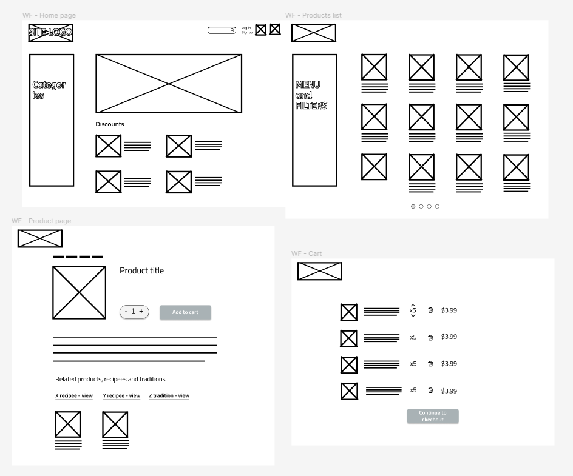
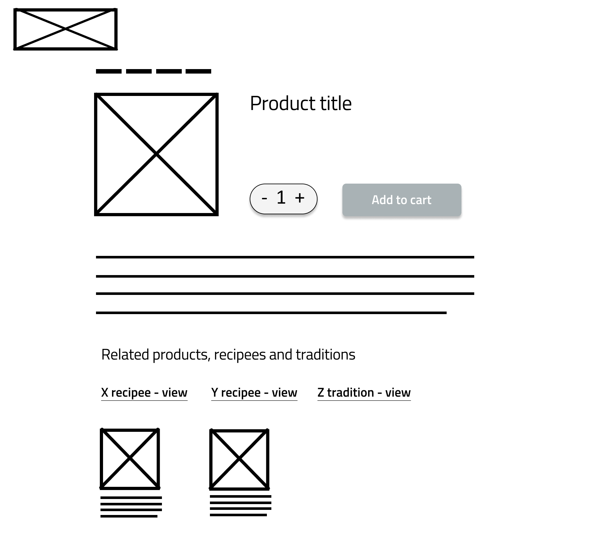
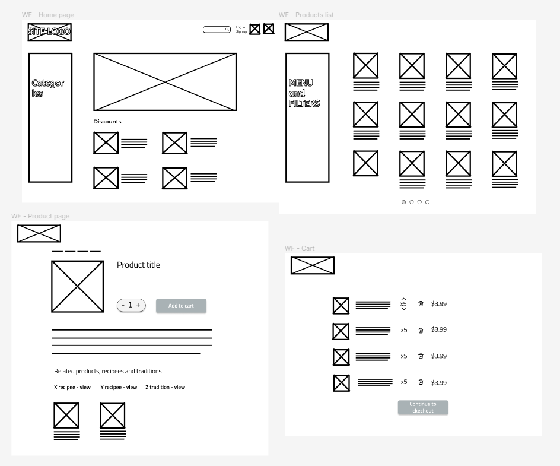
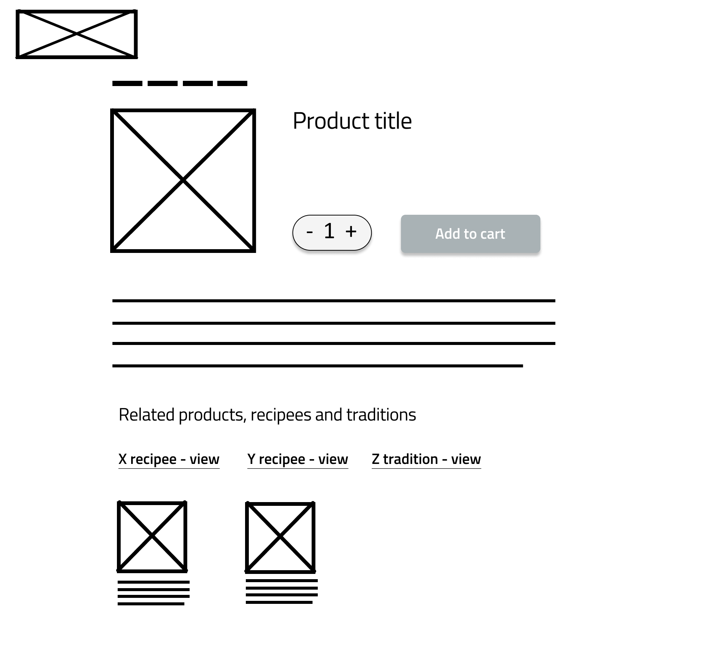

Interface Design project
Goal
The goal of this project was to redesign the interface of an old webshop. The current (at the time) design was outdated and difficult to navigate. The redesign had to be more modern, user friendly and consistent.
Process
The first step in our approach to redesigning the webshop was analysing the current design, and identifying key issues and areas of improvement.
After that we ideated on how these problems can be solved, and made prototypes at various stages of detailing, from hand drawn wireframes to final graphic design.
 



Results
Our design solution is a more modern, intuitive, consistent and efficient. We have redesigned the home and products pages to make them clearer, simpler, and more in line with user’s expectations of a typical webshop. The purchasing process was also redesigned, to make it more straightforward.
Key takeaways
In this project I got to practice my analytical skills for assessing existing designs, and got experience working with the fundamentals of web-design.